Assignment 3
For this week we were asked to start experimenting with some of the computer controlled cutting machines in our labs, specifically the Vinyl Cutter and the Laser. One of the perks of my background is that I have taught classes using these machines and I feel very confidnt with them. For The vinyl cutting portion I am going to make our Fab Lab logo so that when we are in class people can see where we are located. This won't be part of my final project but it is something the lab could use. I will also post some the other projects I have done over the years. I actually really enjoy the vinyl cutting process and our school has used our exptertise for a wide variety of projects around the school. The actual design work was done in Illustrator. This decal is a three color decal so I had to seperate out all three different colors onto different files and send them to the cutter seperately. To manage our print jobs we have a plug in for our Graphtec cutter called Cutting Master 2
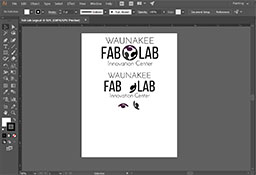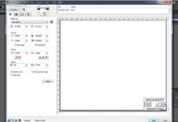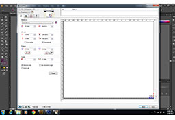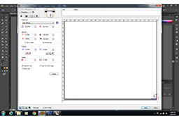


 Vinyl cutter file
Vinyl cutter file
After cutting out the individual colors using either the roll or scraps for the smaller two cuts I then proceeded to weed the cut jobs. After weeding actually transferred the gray and purple portions of the puzzle cube. When the vinyl cutter blade cuts through the vinyl it actually leaves a slight trace in the backing material below. I used the trace to line up the remaining two pieces of the puzzle. After all three colors were located on the backing material I placed mask tape on the entire design to transfer it to the final substrate. We have both clear and opaque mask. Each has their advantages but I went with the opaque as it was wider. After squeegying out the mask I then transferred it to a large piece of mat board. The final result is a sign that we can hang up when connected to the web cam so that people know who we are. When we have visitors to the lab and are connect to the test channel it is hard for us to tell which labs we are view as most of the time the locations are either not visible or are too pixelated to read.
Our next task was to start playing around with parametric design constraints. I decided to take our gears logo and make it into a kit where you can cut out our gears and a central connector to help minimize waste. Whed designing the notch for the gears I used the parametric function in Inventor to allow for automatic scaling of the gears themselves. I also set up an equation so that when you set the size of the notch it automatically set the thickness of the extrusion of the part.
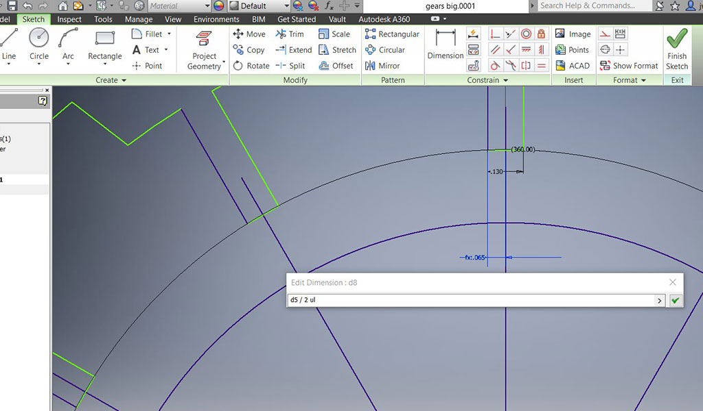

 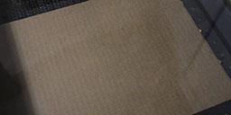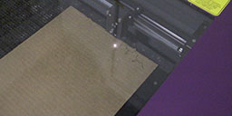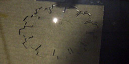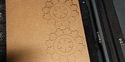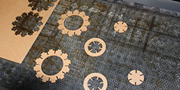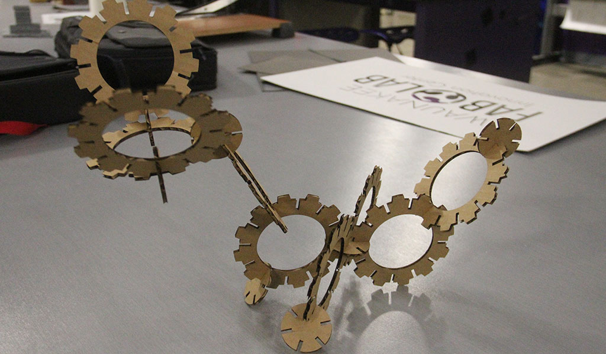
Gear file
Gear .pdf
Gear Adobe Illustrator file
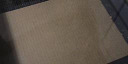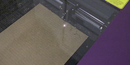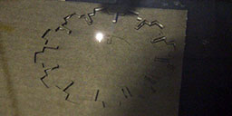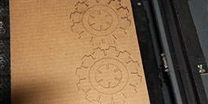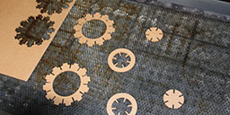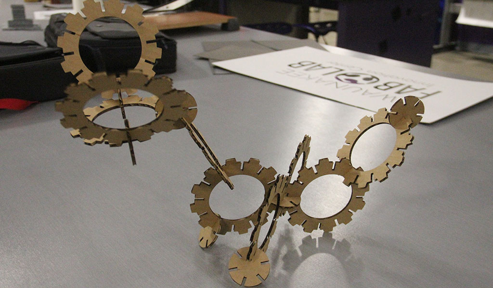
Gear file
Gear .pdf
Gear Adobe Illustrator file
.
In our lab we have quite a bit of experience using both of our lasers. The process for setting up the laser is quite basic. The first step is to identify the material you are using and its thickness so that you can import it into the user control software library. Next we need to make sure that our Illustrator files are using red lines and have a stroke of .0001. Once this is complete cutting the files are as simple as printing to a normal printer. You need to make sure you have constant supervision as you are using light to cut your materials and some of them can be quite flammable. You also need to make sure that you are venting to an outside source so that any nasty fumes can be taken out of the lab. Last and most importantly you need to make sure you NEVER use any Vinyl in the laser as it will destroy the lens and release dangerous fumes in the lab.
This is StoneWork, a free, fully standards-compliant CSS template designed by TEMPLATED. The photos in this template are from Fotogrph. This free template is released under the Creative Commons Attribution license, so you're pretty much free to do whatever you want with it (even use it commercially) provided you give us credit for it. Have fun :)